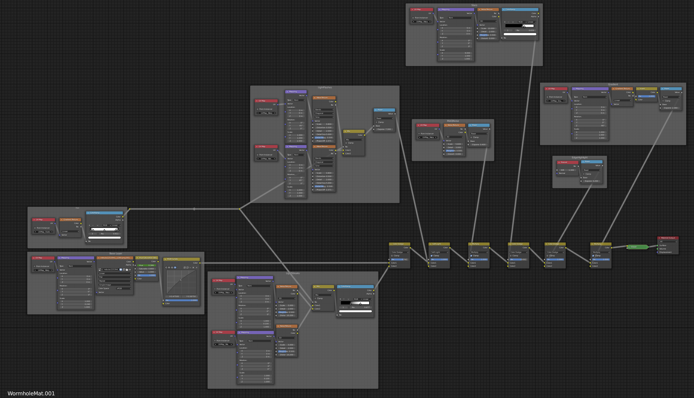
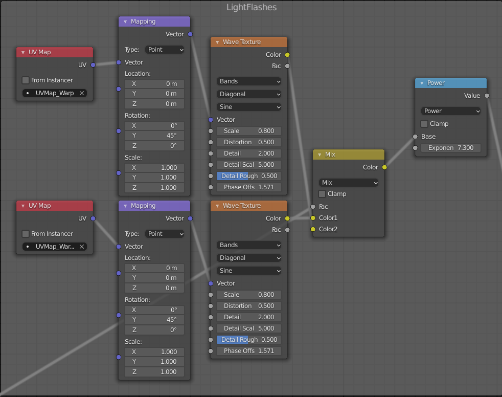
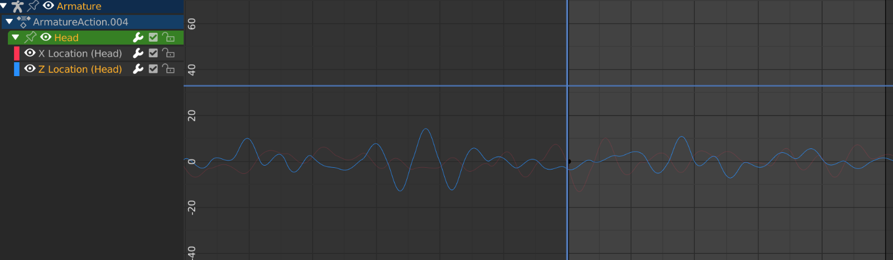
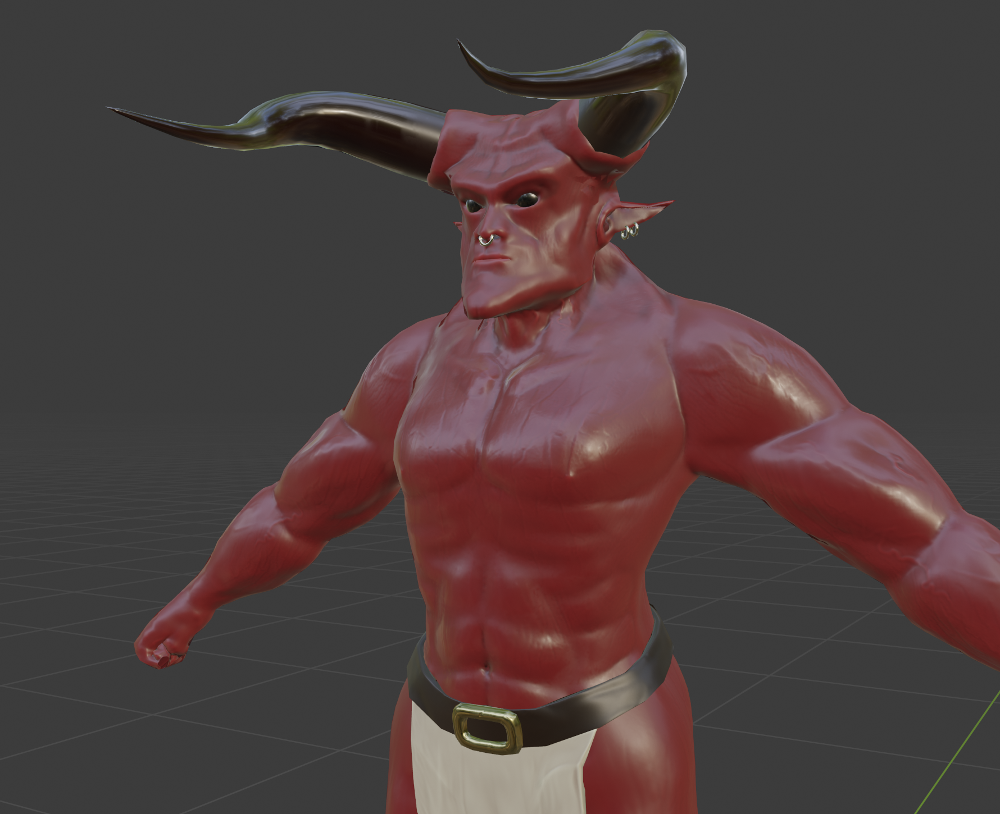
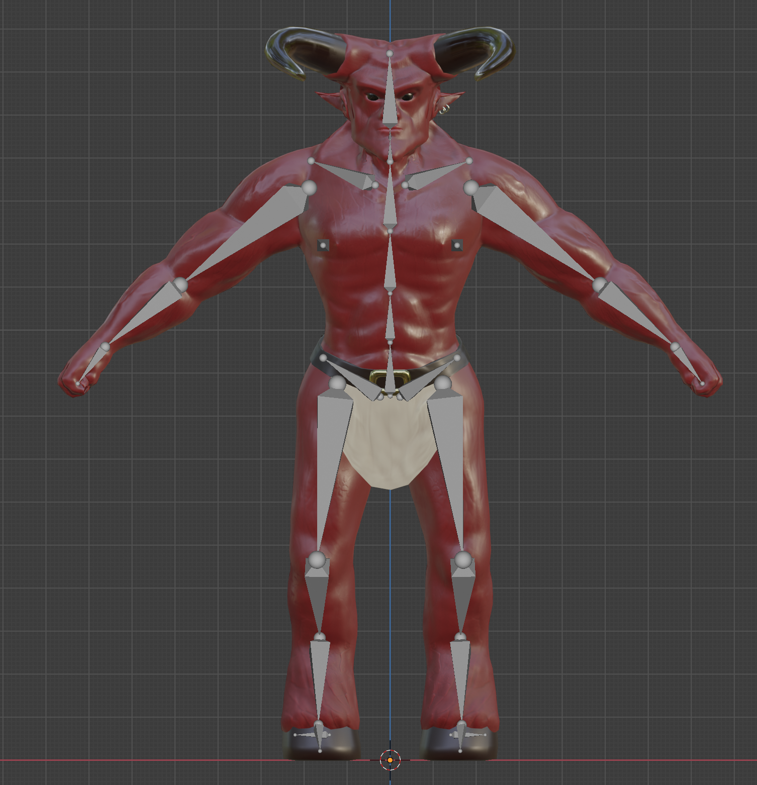
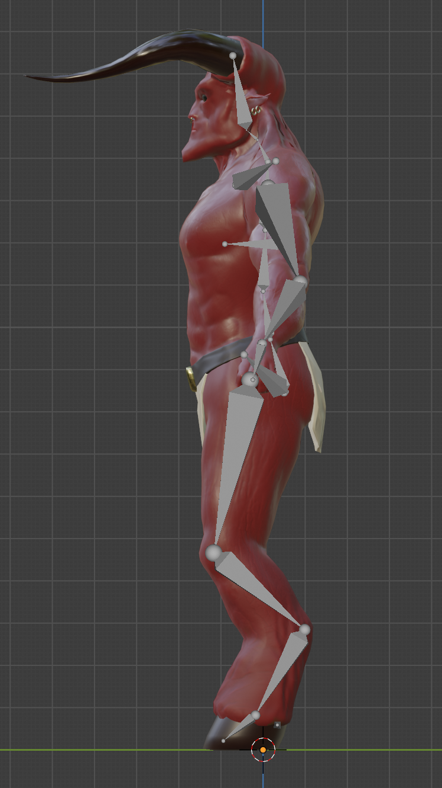

This project was to create a womhole style effect similar to the ones in Sci-Fi TV Shows. The mesh is a basic cylinder using a bevel modifier to seperate it into 32 segments. It is rigged with a bendy bone so the end can be animated. The shader looks quite complex in total, although it's made up of various simple procedural layers.
The whole shader.
Most of the procedural layers use types of noise of a wave in the case of the light flashes.
Procedural light flash effect.
The layers are mixed with various blend modes to create the final effect. Both the shaders and the animation use procedural effects. The bone animation was animated using random noise in the graph.
Procedual Animation.
Below is a render of the final animation with some added sound effects.
I wanted to create a rigged character. This design was inspired by the 1985 movie 'Legend'. I didn't want to make an exact copy, but I felt some main features were important. I started by blocking the character out into a basic shape and then sculpted a high poly version.
Finished Character.
Front view showing rig.
Side view showing rig.
The high poly version was baked onto a lower poly model using normal maps, cavity maps and then various other texture maps were added. I used one texture file for all of the models (clothing and jewelry) to limit the file size and amount of video RAM used. The high poly model had about 3,000,000 tris, whereas the low-poly version had only 15,000.
As animating a character can be quite difficult to look natural I used an animation from Mixamo. I had to make adjustments to the armatures and do a lot of manual weight painting for it to look more effective.
Here is a short video of the model with a small animation and some simple Manta-Flow fluid simulation fire and smoke.
{kind=link}
{kind=link}
{kind=link}
{kind=link}
{kind=link}
{kind=link}
{kind=link}
{kind=link}